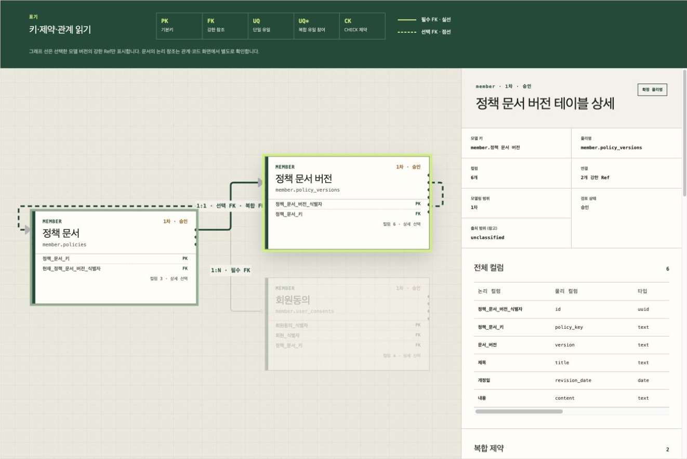

우클링 설계 검토 도구
우클링은 공방 강사가 수업을 개설하고 수강 신청을 관리하는 서비스입니다. 저는 팀원이 “이 컬럼은 왜 필요한가?”라는 질문에 답을 찾을 수 있도록, 데이터 구조를 설계 당시의 결정 기록과 함께 보는 포털을 만들었습니다.
- 테이블
- 59개
- 컬럼
- 434개
- 물리 참조 관계
- 79개
2026년 11월 3일 승인본 v0.12.0 기준. 회원, 수강, 결제 영역을 합산한 수치입니다.
Codex 초안에서 승인 모델까지
Codex에 용어와 컬럼의 초안을 맡겼습니다. 제안을 검토한 뒤 채택한 이유와 보류한 이유를 기록하도록 작업 절차를 설계했습니다. 예를 들어 용어별 생성기를 두자는 제안은 관리 부담이 커서, 팀원 세 명이 함께 고칠 수 있는 용어표 하나로 줄였습니다.

약관 버전과 회원 동의
새 약관을 게시한 뒤에도 회원이 어떤 판본에 동의했는지 알 수 있어야 했습니다. 약관 문서와 버전을 분리하고, 문서가 가리키는 현재 버전과 가입 당시의 동의 기록을 구분했습니다.

설계에서 구현까지
홈 수업 편성. ‘추천’과 ‘시즌’ 영역을 재배치해도 각 영역 안의 수업 순서는 유지되어야 했습니다. 영역과 수업 배치를 두 테이블로 나눴고, 두 승인본을 비교하면 추가된 테이블과 컬럼을 확인할 수 있습니다.
회원가입 API. 용어사전의 정의를 논리 모델과 PostgreSQL 컬럼으로 구체화하고, 테이블 관계도(ERD)를 작성한 뒤 Swagger로 API의 요청과 응답을 정의했습니다. Spring Boot에서 회원과 최초 약관 동의를 함께 저장하고, 수강생 프로필 생성이 중단돼도 같은 회원 ID로 가입을 이어가도록 구현했습니다.